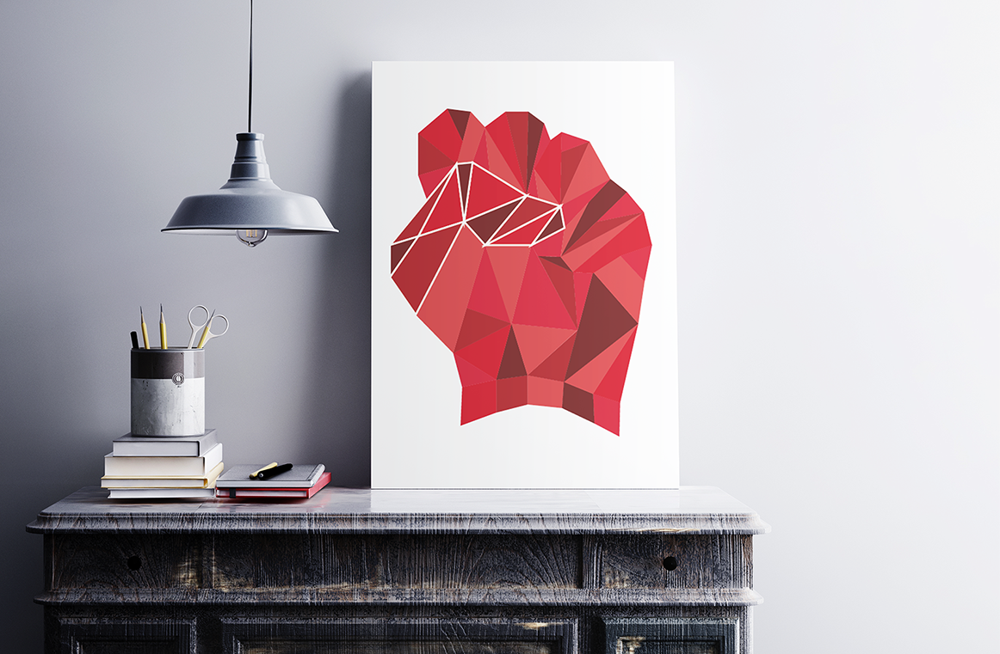

-

- 
Al momento de hablar de este momento de análisis del afiche político en Chile y la mano como un elemento gráfico del mismo es posible establecer que la mano recae en su significación inicial y mencionada por Balzac, donde la mano permite ir más allá de la expresión del cuerpo, siendo capaz de mostrar el pensamiento y pudiendo dar pie a compresión del gesto. Es de este modo que podemos hablar que en el afiche político la mano es capaz de decirnos un todo, todo referido a la idea del afiche como un medio de expresión y de información instantáneo, donde la imagen está por sobre del texto.
“Una mano no se refiere únicamente a un cuerpo , sino que expresa y es continuación de un pensamiento es preciso comprender y traducir. Honoré Balzac”